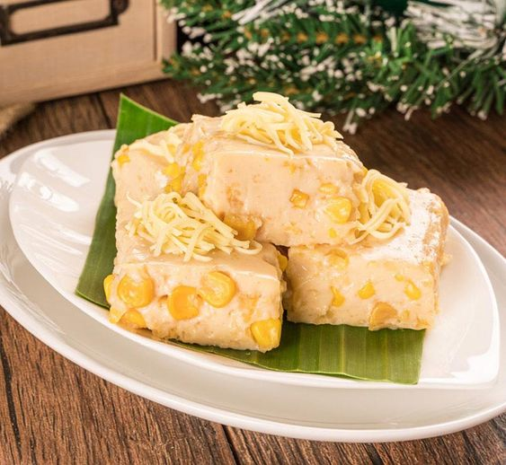

Maja Blanca is a Filipino dessert made from coconut milk, cornstarch, and sugar. Often called Coconut
Pudding, this luscious dessert is easy to make and the ingredients are very common.Unknown to many, the
original Maja Blanca Recipe does not include corn and milk. In this recipe, I added whole sweet kernel corn
and condensed milk for added taste and a more creamy texture.Since Christmas season is just around the
corner, this would make a very good holiday dessert especially during potluck Christmas Parties and Noche
Buena as well.
Ingredients (serving: good for 8 people)
- 4 cups Coconut milk
- 3/4 cup Cornstarch
- 14 ounces Condensed Milk
- 3/4 cup Fresh Milk
- 3/4 Granulated Sugar
- 15 Ounces Whole sweet kernel corn
- 5 tbsp Toasted Grated Coconut
Steps for making Maja Blanca
- Pour the coconut milk in a cooking pot and bring to a boil.
- Add the sugar, condensed milk, and whole sweet kernel corn then stir until all the ingredients are
evenly distributed.
- Simmer for 8 minutes
- Combine the milk and cornstarch then whisk until the cornstarch is diluted
- Pour the fresh milk and cornstarch mixture in the cooking pot and stir thoroughly.
- Allow to cook while stirring until the mixture reaches your desired thickness
- Pour the mixture in a serving tray then arrange and flatten the top using a flat tool such as a wooden
spatula
- Allow to cool down then refrigerate for at least 1 hour
- Garnish with toasted grated coconut (or latik if available)
- Serve cold. Share and enjoy!